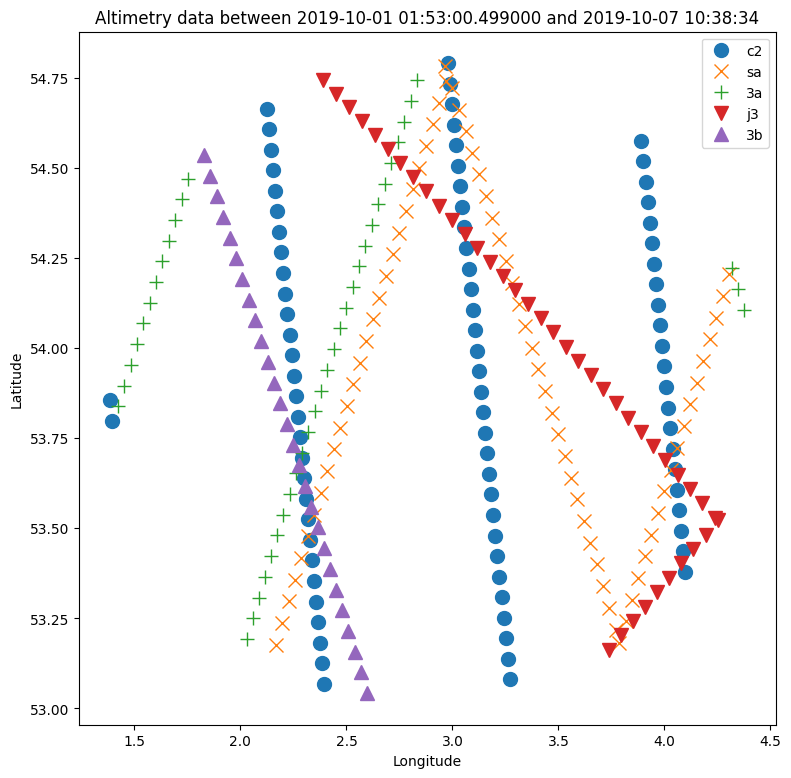

Track observations#
Track observations are point observations for moving points. The index therefore consists of time, x- and y-positions. Altimetry data acquired from satellite is an example of track observations; data obtained from boat is another example.
The track observation data may come from a file or web api. We will cover the following situations here:
File
dfs0
csv/excel
REST API
modelskill has the class TrackObservation for working with track observations.
Track observations consist of time-position-value (data) and meta data such as
data type (e.g. water level)
unit (e.g. meter)
ModelSkill is agnostic to the coordinate reference system (CRS) and it is therefore the responsibility of the user to make sure that all data (observations and model) use the same CRS.
import pandas as pd
import modelskill as ms
Data from file#
The two first items in the file must be x- and y- coordinate values.
dfs0 files can be read directly by TrackObservation.
csv files needs to be read by pandas first and passed to TrackObservation as a DataFrame.
fn = "data/SW/altimetry_NorthSea_20171027.csv"
df = pd.read_csv(fn, index_col=0, parse_dates=True) # step 1: create DataFrame
df.head()
| lon | lat | surface_elevation | significant_wave_height | wind_speed | |
|---|---|---|---|---|---|
| date | |||||
| 2017-10-26 04:37:37 | 8.757272 | 53.926136 | 1.6449 | 0.426 | 6.100000 |
| 2017-10-26 04:37:54 | 8.221631 | 54.948459 | 1.1200 | 1.634 | 9.030000 |
| 2017-10-26 04:37:55 | 8.189390 | 55.008547 | 1.0882 | 1.717 | 9.370000 |
| 2017-10-26 04:37:56 | 8.157065 | 55.068627 | 1.0309 | 1.869 | 9.559999 |
| 2017-10-26 04:37:58 | 8.124656 | 55.128700 | 1.0369 | 1.939 | 9.980000 |
o1 = ms.TrackObservation(df, item="surface_elevation") # step 2: create TrackObservation
o1
/opt/hostedtoolcache/Python/3.13.9/x64/lib/python3.13/site-packages/modelskill/timeseries/_track.py:136: UserWarning: Removed 22 duplicate timestamps with keep=first
warnings.warn(
<TrackObservation>: surface_elevation
Time: 2017-10-26 04:37:37 - 2017-10-30 20:54:47
Quantity: []
DHI Altimetry API#
You need to pip install “watobs” for this part!
See Altimetry_data.ipynb example notebook.
import os
from watobs import DHIAltimetryRepository
api_key = os.environ["DHI_ALTIMETRY_API_KEY"]
repo = DHIAltimetryRepository(api_key)
data = repo.get_altimetry_data(area="lon=2.9&lat=53.9&radius=100", start_time="2019-10-1",
end_time="2019-10-8")
data.df.head()
Succesfully retrieved 268 records from API in 1.64 seconds
| longitude | latitude | water_level | significant_wave_height | wind_speed | distance_from_land | water_depth | satellite | quality | absolute_dynamic_topography | water_level_rms | significant_wave_height_raw | significant_wave_height_rms | wind_speed_raw | wind_speed_rads | quality_swh | quality_water_level | quality_wind_speed | |
|---|---|---|---|---|---|---|---|---|---|---|---|---|---|---|---|---|---|---|
| datetime | ||||||||||||||||||
| 2019-10-01 01:53:00.499 | 4.095785 | 53.379154 | -1.374 | 1.621 | 9.519 | 53819.0 | -23.75 | c2 | 2 | NaN | 0.041 | 1.630 | 0.374 | 9.511 | 8.45 | 2 | 2 | 2 |
| 2019-10-01 01:53:01.443 | 4.086177 | 53.436186 | -1.410 | 1.571 | 10.095 | 56835.0 | -23.18 | c2 | 2 | NaN | 0.031 | 1.576 | 0.390 | 10.078 | 9.00 | 2 | 2 | 2 |
| 2019-10-01 01:53:02.386 | 4.076554 | 53.493216 | -1.387 | 1.718 | 9.951 | 60379.0 | -24.14 | c2 | 2 | NaN | 0.030 | 1.734 | 0.280 | 9.936 | 8.86 | 2 | 2 | 2 |
| 2019-10-01 01:53:03.330 | 4.066916 | 53.550245 | -1.355 | 1.758 | 9.771 | 64265.0 | -28.75 | c2 | 2 | NaN | 0.048 | 1.777 | 0.391 | 9.759 | 8.71 | 2 | 2 | 2 |
| 2019-10-01 01:53:04.273 | 4.057262 | 53.607274 | -1.367 | 1.809 | 9.519 | 68517.0 | -34.86 | c2 | 2 | NaN | 0.044 | 1.832 | 0.308 | 9.511 | 8.45 | 2 | 2 | 2 |
data.plot_map()

o1 = ms.TrackObservation(data.df, item="significant_wave_height", name='Alti_from_df', quantity=ms.Quantity("Significant wave height", "m"))
o1
<TrackObservation>: Alti_from_df
Time: 2019-10-01 01:53:00.499000 - 2019-10-07 10:38:34
Quantity: Significant wave height [m]